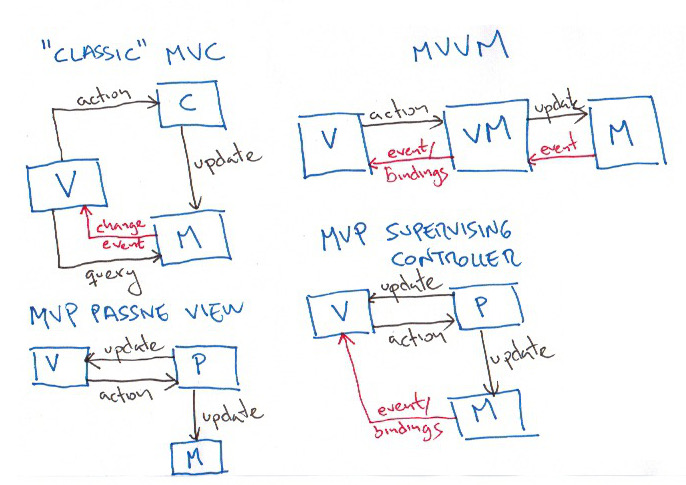

JavaScript
FASHION VICTIM
Enrique Amodeo
(who is this guy?)
![[Enrique Amodeo, circa 2015]](img/EnriqueAmodeo.jpg)
- Programming since 1984
- Currently Software Engineer at SoundCloud
- Has loved JS since 2005
- Test infected
- Enthusiast of the Agile/Lean way
- Follow me at @eamodeorubio
Disclaimer
- Totally Opinionated
- Opinions, silly jokes, and bad drawings are mine and only mine
- No cats, animals and human beings were harmed during this presentation
Driven by the Fashion
Functional UI is the new black
MV* Madness !!
???

OMG! What have I done!
Reactive Layered Architecture(TM)
Layers of abstraction
Even more layers of abstraction
Complex page
Boundaries are side effects
DOM Rendering
BFFs are HOT
The End
Don't be a Fashion Victim
But a Fashion Critic
Or a Trend Setter